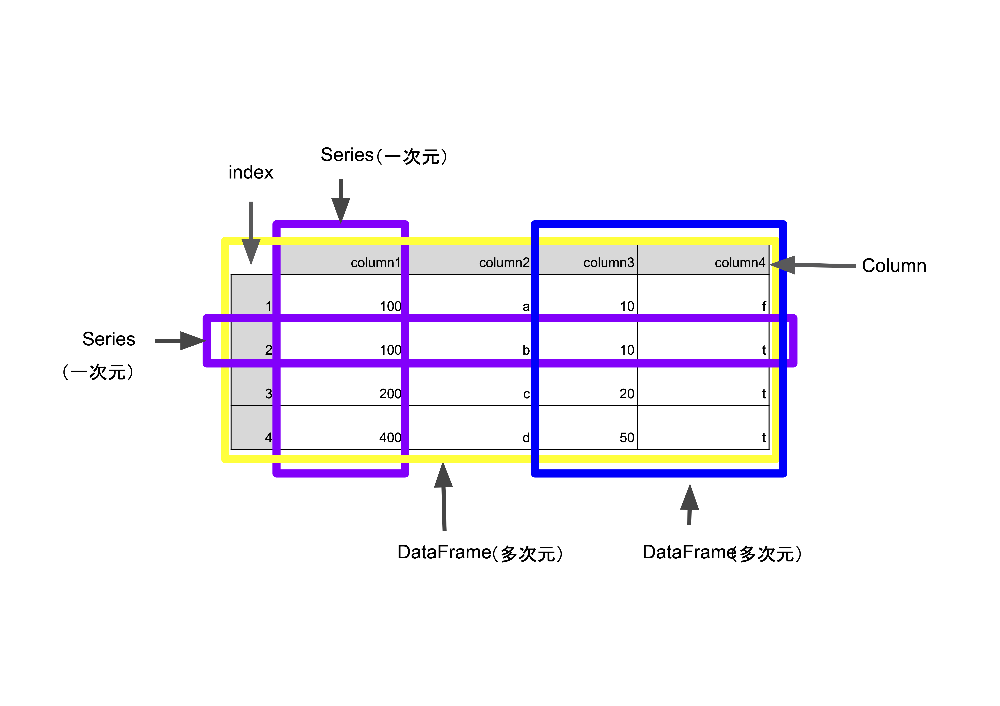
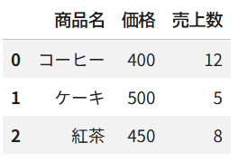

第11回 高階関数とpandasライブラリ¶
Pythonが「データ分析の最強ツール」と呼ばれるゆえんである、pandas（パンダス）ライブラリ を学びます。
pandasを使えば、皆さんが普段使っているExcelのような「表（テーブル）」のデータを、何十万行あっても一瞬で読み込み、条件で絞り込み、集計することができます。 前半では「高階関数」「ラムダ式」といった、処理を短く書くための新しい文法も学びます。
🎯 到達目標¶
ラムダ式（名無しの関数） と 高階関数（map, filterなど） を使って、リストの処理を短く書ける。
pandasの シリーズ（Series） と データフレーム（DataFrame） の違いを図解で理解できる。
CSVファイルを読み込み、loc / iloc を使って欲しいデータだけを自由自在に抽出できる。
データの 欠損値処理 や グループ化（groupby） を行い、意味のある統計結果を導き出せる。
練習問題のGoogle Colab起動¶

上記の「Open In Colab」をクリックして、Google Colabを起動させてください
[ファイル] → [ドライブにコピーを保存] を選択して、Googleドライブにコピーを保存してください
保存が成功すると，Googleドライブの「マイドライブ」 →「Colab Notebooks」にコピーしたファイルが保存されます。
GoogleドライブにコピーしたGoogle ColabのNotebooksを開いてください
開いたGoogle ColabのNotebooksで作業をしてください
イントロダクション：データ分析の主役「pandas」¶
前回学んだ「NumPy」は数字の計算に特化した「超高速な電卓」でした。しかし、実際のデータには数字だけでなく「商品名」や「日付」といった様々な種類（型）が混ざっています。
そこで登場するのが pandas です。これは一言で言えば 「Pythonの中で動く、超強力なExcel」 です。列の名前（見出し）をつけたり、空白のデータを掃除したり、商品ごとに売上をまとめたりといった、実務で行うデータ分析のほぼ全てを担う主役ツールです。
高階関数と便利なモジュール¶
pandasに入る前に、Pythonの便利な書き方を少しだけ学びましょう。
高階関数（こうかいかんすう、Higher-Order Function）とは、プログラミングにおいて「関数を引数として受け取る」、 または「関数を戻り値（返り値）として返す」特性を持つ関数のことです
高階関数

def print_price(price, func):
print('価格は' + func(price))
def price_without_tax(price):
return f'税抜き{price}円'
def price_with_tax(price):
return f'税込み{int(price*1.1)}円'
print_price(800, price_without_tax)
print_price(800, price_with_tax)
出力
価格は税抜き800円
価格は税込み880円
ラムダ式（名無しの使い捨て関数）¶
これまで def を使って関数を作ってきましたが、「1回しか使わない簡単な関数に、わざわざ名前をつけるのは面倒だな…」という時があります。そんな時に使うのが、1行で書ける ラムダ式（lambda） です。
lambda 引数: 返したい計算式と書きます。
ラムダ式（lambda式）の説明

ラムダ式（lambda式）

def print_price(price, func):
print('価格は' + func(price))
print_price(800, lambda price: f'税抜き{price}円')
print_price(800, lambda price: f'税込み{int(price*1.1)}円')
出力
価格は税抜き800円
価格は税込み880円
高階関数（関数を材料にする関数）¶
関数の中に「別の関数」を引数として渡すことができる特別な関数のことを、高階（こうかい）関数と呼びます。ラムダ式ととても相性が良いです。
max(),sorted(): 最大値を見つけたり、並び替えたりします。この時、key=という引数にラムダ式を渡すと、「どの基準で並び替えるか」を細かく指定できます。map(): リストの全ての要素に、同じ関数を適用します。filter(): リストの中から、条件（関数）に合うものだけを抽出します。 ※mapやfilterの結果は「イテラブル（取り出し係）」として返ってくるため、見たい時はlist()に変換する必要があります（リストからイテラブルへ）。
# ラムダ式と高階関数(sorted)の組み合わせ
# 辞書が入ったリスト（カフェの売上データ）
sales_data = [
{"name": "コーヒー", "price": 400},
{"name": "ケーキ", "price": 500},
{"name": "紅茶", "price": 450}
]
# 値段(price)の安い順に並び替えたい！
# key= の部分に「データの x を受け取ったら、xの"price"を基準にするよ」という名無しの関数を渡します。
sorted_data = sorted(sales_data, key=lambda x: x["price"])
print("安い順:", sorted_data)
# map と filter の例
numbers = [10, 20, 30]
# 全て2倍にする (map)
doubled = list(map(lambda x: x * 2, numbers))
# 3以上のものだけ抽出する (filter)
filtered = list(filter(lambda x: x >= 3, numbers))
print("2倍:", doubled)
print("3以上抽出:", filtered)
出力
安い順: [{'name': 'コーヒー', 'price': 400}, {'name': '紅茶', 'price': 450}, {'name': 'ケーキ', 'price': 500}]
2倍: [20, 40, 60]
3以上抽出: [10, 20, 30]
map()¶
map() は、関数とイテラブル（リストなど）を受け取り、各要素に関数を適用した結果を返す高階関数です。
# 1. 通常の関数を使う例
def square(x):
"""数を2乗する関数"""
return x ** 2
numbers = [1, 2, 3, 4, 5]
# map(関数, イテラブル)
result = map(square, numbers)
# mapオブジェクトはリストなどに変換する必要がある
squared_list = list(result)
print(squared_list) # [1, 4, 9, 16, 25]
filder()¶
filter() は、関数（条件）とイテラブルを受け取り、条件が True になる要素だけを抽出します。
通常の関数を使う例
def is_even(n):
"""偶数かどうかを判定"""
return n % 2 == 0
numbers = [1, 2, 3, 4, 5, 6, 7, 8, 9, 10]
# filter(条件関数, イテラブル)
even_numbers = filter(is_even, numbers)
# filterオブジェクトはリストなどに変換
result = list(even_numbers)
print(result) # [2, 4, 6, 8, 10]
lambda式を使った例
numbers = [1, 2, 3, 4, 5, 6, 7, 8, 9, 10]
# 偶数だけ抽出
evens = list(filter(lambda x: x % 2 == 0, numbers))
print(evens) # [2, 4, 6, 8, 10]
# 5より大きい数だけ抽出
greater_than_5 = list(filter(lambda x: x > 5, numbers))
print(greater_than_5) # [6, 7, 8, 9, 10]
便利なモジュール（random, math, datetime）¶
データ分析でよく使う、Pythonに最初から入っている道具箱（モジュール）です。
random: ランダムな数字を作ったり、リストからくじ引きをしたりします。math: 平方根など高度な数学の計算をします（第4回で学びましたね）。datetime: 日付や時間を、「文字」ではなく「時間のデータ」として扱います。
import random
import datetime
# ランダムにおみくじを引く
omikuji = ["大吉", "中吉", "小吉"]
print("今日の運勢:", random.choice(omikuji))
# 今の時刻を取得する
now = datetime.datetime.now()
print("現在の時刻:", now)
練習問題¶
練習問題 1（基礎：map と filter）
数値のリスト numbers = [1, 2, 3, 4, 5, 6, 7, 8, 9, 10] があります。
filter() と map()、そしてラムダ式を使って、「奇数だけを抽出し、それらをすべて2乗したリスト」を作成してください。
（出力例: [1, 9, 25, 49, 81]）
👉 解答例を見る（ここをクリックして展開）
練習問題 1（解答）
filter と map の組み合わせ
map() や filter() は「関数を引数として受け取る」高階関数です。
ちょっとした条件付けには lambda x: ... のようにラムダ式を使うと、個別の def を定義せずに1行でスマートに記述できます。
numbers = [1, 2, 3, 4, 5, 6, 7, 8, 9, 10]
# 1. 奇数のみフィルター (x % 2 != 0)
# 2. 抽出された値を2乗 (x ** 2)
odds_squared = list(
map(lambda x: x**2, filter(lambda x: x % 2 != 0, numbers))
)
print(odds_squared) # [1, 9, 25, 49, 81]
練習問題 2（基礎：sorted の key 指定）
辞書のリスト users = [{"name": "Alice", "age": 25},
{"name": "Bob", "age": 20},
{"name": "Charlie", "age": 30}] があります。
sorted() 関数とラムダ式を使って、年齢（age）が若い順に並び替えた新しいリストを作成してください。
👉 解答例を見る（ここをクリックして展開）
練習問題 2（解答）
sorted の key 引数への適用
sorted() の key 引数は高階関数の代表例です。
各要素からソート用の「基準となる値」を抽出する関数をラムダ式で渡すことで、
複雑な辞書オブジェクトも簡単に並び替えできます。
users = [
{"name": "Alice", "age": 25},
{"name": "Bob", "age": 20},
{"name": "Charlie", "age": 30},
]
# key 引数に「要素（辞書）を受け取って age の値を返すラムダ式」を渡す
sorted_users = sorted(users, key=lambda user: user["age"])
print(
sorted_users
) # [{'name': 'Bob', 'age': 20}, {'name': 'Alice', 'age': 25}, ...]
練習問題 3（応用：自作の高階関数）
自作関数 apply_twice(func, value) を作成してください。
この関数は「第1引数に受け取った関数 func」を、「第2引数の値 value」に対して
2回連続で適用した結果 を返す高階関数です。
（例: apply_twice(lambda x: x + 3, 10) を実行すると、10 + 3 + 3 = 16 が返る）
👉 解答例を見る（ここをクリックして展開）
練習問題 3（解答）
関数を引数にとる高階関数
高階関数とは「関数を引数にとる」か「関数を戻り値として返す」関数のことです。
func(func(value)) のように、受け取った関数をそのまま実行できます。
# 引数 func に「関数」を受け取る高階関数
def apply_twice(func, value):
return func(func(value))
# テスト: 10 に 「+3 する関数」を2回適用する
result = apply_twice(lambda x: x + 3, 10)
print(result) # 16
# テスト: 2 に 「2倍する関数」を2回適用する (2 * 2 * 2)
print(apply_twice(lambda x: x * 2, 2)) # 8
練習問題 4（応用：関数を返す関数 / アキュムレータ）
「倍率 n」を受け取り、「入力された数値を n 倍にする新しい関数」を生成して返す
高階関数 make_multiplier(n) を作成してください。
これを使って「3倍する関数」を作成し、実行確認をしてください。
👉 解答例を見る（ここをクリックして展開）
練習問題 4（解答）
関数を返す高階関数 (クロージャ)
関数の中で動的に新しい関数を生成して return しています。
外側の変数 n の状態を保持した関数が作られるこの仕組みを クロージャ（クロージャ / エンクロージャー） と呼びます。
def make_multiplier(n):
# 関数の中でラムダ式（新しい関数）を作って返す
return lambda x: x * n
# 「3倍する関数」を作る
triple = make_multiplier(3)
# 「5倍する関数」を作る
quintuple = make_multiplier(5)
print(triple(10)) # 30
print(quintuple(10)) # 50
練習問題 5（発展：実用的なソート条件）
商品データのリスト items = [("Apple", 150, True), ("Banana", 100, False),
("Cherry", 200, True), ("Date", 100, True)] があります。
タプルの要素は (商品名, 価格, 在庫ありフラグ) です。
sorted() とラムダ式を使い、以下の複合優先度順で並び替えてください。
1. 在庫があるもの（True）を優先
2. 価格が安い順
👉 解答例を見る（ここをクリックして展開）
練習問題 5（解答）
タプルを使った複数条件ソート
ラムダ式の戻り値として (条件1, 条件2) というタプルを返すと、
複数のキーで優先順位をつけてソートできます。
not item[2] とすることで、True (not で False / 0) が False (not で True / 1)
より小さくなり、在庫あり（True）が前に来ます。
items = [
("Apple", 150, True),
("Banana", 100, False),
("Cherry", 200, True),
("Date", 100, True),
]
# ソートキーにタプル (優先度1, 優先度2) を指定する
# Pythonでは True(1) > False(0) なので、not item[2] で True を先頭にする
sorted_items = sorted(items, key=lambda item: (not item[2], item[1]))
for name, price, stock in sorted_items:
print(f"{name}: {price}円 (在庫: {stock})")
# 出力結果:
# Date: 100円 (在庫: True)
# Apple: 150円 (在庫: True)
# Cherry: 200円 (在庫: True)
# Banana: 100円 (在庫: False)
pandasライブラリ¶
さあ、ここからが本番の pandas です！ NumPyを np と呼んだように、pandasは pd というあだ名で読み込むのが世界共通のルールです。
シリーズ (Series) と データフレーム (DataFrame)¶
pandasには、2つの重要な「箱」があります。エクセルに例えて図解で覚えましょう。
DataFrame : 多次元、行と列がある。（いわゆる表形式）
Series : 1次元。一つの行もしくは列のみ。
【SeriesとDataFrameのイメージ図】
▼ Series (シリーズ) ＝ 「1列だけのデータ（リストの強化版）」
[インデックス] [データ]
0 コーヒー
1 ケーキ
2 紅茶
▼ DataFrame (データフレーム) ＝ 「行と列がある表（Seriesの集まり）」
[インデックス] 商品名(列名) 価格(列名) 売上数(列名)
0 コーヒー 400 12
1 ケーキ 500 5
2 紅茶 450 8
SeriesとDataFrame
{kind=link}

pandasはpdとしてimportすることが慣例となっています。
import pandas as pd #
データ分析では、主にこの「データフレーム」を使います。
pandasはリッチなデータ構造と関数を提供します。DataFrameと呼ばれる二次元の表形式で分析を容易にします。そのほか、リレーショナルデータベース（SQLなど）の柔軟なデータ操作能力を持ち合わせます。 もともと金融データ分析アプリケーションとしてのツールとして設計されたこともあり、時系列データも扱いやすいです。
DataFrameの作成・読み込み¶
自分でデータフレームを作ることもできますが、
SeriesとDataFrame¶
1列ずつデータをpd.Seriesを作成
price
price = pd.Series([100, 40, 300, np.nan , 500, 1000, 300, 400, 240, 3000])
print(price)
num
num = pd.Series([5, 2, 1, 0, 4, 200, 7, 19, 20, 100])
print(num)
datetimes
datetimes = pd.date_range('20180601', periods=10, freq= '627H')
print(datetimes)
Seriesの列データを組み合わせてデータフレームを作ります
df = pd.DataFrame({'price':price, 'num': num, 'datetime': datetimes })
df
次のcellのようにまとめて作ることもできます。
df = pd.DataFrame({'price':[100, 40, 300, np.nan , 500, 1000, 300, 400, 240, 3000],
'num': [5, 2, 1, 0, 4, 200, 7, 19, 20, 100],
'datetime': pd.date_range('20180601', periods=10, freq= '627H') })
df
dfのタイプを確認します
type(df)
price列の型も確認してみましょう
type(df['price'])
2つ以上の列（もしくは行）を選択するとSeriesではなくDataFrameとなります。
type(df[['price','num']])
1つの行もSeriesです。
df.iloc[0]
typeをみる
type(df.iloc[0])
dtypesで列ごとのタイプを一括して確認できます
df.dtypes
headで行数を指定することで、DataFrameの最初の3行を表示できます
df.head(3)
DataFrameのランダムな3行を表示するにはsampleを用います
df.sample(3)
DataFrameの最後の3行をtailを用いて表示できます
df.tail(3)
DataFrameのIndexを確認します
df.index
DataFrameのcolumnsを確認します
df.columns
列の抽出は次のように列名を指定することできます
df['price']
複数列の抽出の抽出もできます
df[['price','datetime']]
特定の列をindexにすることもできます
df = df.set_index(['datetime'])
df
print(df.index[0]) # indexの0番目の値を確認
print(df.index[-1]) # indexの末尾の値を確認
indexをresetして0から振り直すにはreset_indexが使えます。
df = df.reset_index()
df.head(2)
indexには複数の列を指定することも可能です。（Multiindex）
df = df.set_index(['datetime','num'])
df
indexをresetするにはreset_indexを使います。
df = df.reset_index()
df
CSVから読み込む¶
CSVファイルから読み込む（pd.read_csv）
import pandas as pd
# （準備）Colab上に練習用のCSVファイルを作ります
csv_text = "商品名,価格,売上数\nコーヒー,400,12\nケーキ,500,5\n紅茶,450,8\n"
with open("cafe_data.csv", "w", encoding="utf-8") as f:
f.write(csv_text)
# CSVファイルからのデータフレームの作成（読み込み）
df = pd.read_csv("cafe_data.csv")
# データフレーム(DataFrame)を表示します（Colabだと表が綺麗に表示されます！）
df
出力
{kind=link}

データの抽出・操作の基本¶
巨大な表の中から、自分の欲しいデータだけを切り出すテクニックです。
基本的なデータ選択（loc, iloc）とデータの参照¶
これも初心者が非常に混乱しやすいポイントです！しっかり区別しましょう。
loc(ロケーション): インデックスの 「名前（ラベル）」 や列の 「名前」 で指定します。locは行の名前（ラベル）や列の名前、条件を指定して抽出するために用いることができます。
iloc(インデックス・ロケーション): インデックスの 「番号（0, 1, 2...）」 で指定します。ilocは行や列の番号を指定して抽出することができます。
注釈
Note loc iloc の違い
ilocは基本的に場所を示す整数（0からテーブルの長さ-1まで）で指定することができます。またTrue/Falseでの条件指定もできます。
locは基本的には場所の名前（label）やで指定することができます。またTrue/Falseでの条件指定もできます。
loc と iloc の違い
# loc と iloc の違い
# iloc: 「1行目（0から数える）」のデータを取り出す
print("--- iloc (番号で指定) ---")
print(df.iloc)
# 列だけを取り出す（Seriesとして取り出されます）
print("\n--- 列の参照 ---")
print(df["価格"])
出力
--- iloc (番号で指定) ---
<pandas.core.indexing._iLocIndexer object at 0x7e32b4241860>
--- 列の参照 ---
0 400
1 500
2 450
Name: 価格, dtype: int64
データの条件取り出し¶
NumPyと同じように、「条件に合う行だけ」を抽出することができます。
条件をつけて行や列を抽出する方法¶
import pandas as pd
import numpy as np
df = pd.DataFrame({'price':[100, 40, 300, np.nan , 500, 1000, 300, 400, 240, 3000],
'num': [5, 2, 1, 0, 4, 200, 7, 19, 20, 100],
'datetime': pd.date_range('20180601', periods=10, freq= '627H') })
priceが100より大きい行のみ抽出します。
df.loc[df['price']>100]
priceが300以上の’price’列のみ抽出します。
df.loc[df['price']>=300, 'price']
複数の条件を指定することもできます。&でAND条件を指定できます
df.loc[(df['price']>100)&(df['datetime']>'2018-11-01')]
複数の条件をorで指定することもできます。orは|で示します。
df.loc[(df['price']>100) | (df['datetime']>'2018-11-01')]
次に行や列の番号で抽出する場合です。この場合は、ilocが使えます。
df.iloc[:5, 1]
2行目のデータを指定
df.iloc[2,:]
indexの名前（ラベル）が2のものを抽出
df.loc[2,:]
一意な値の集合¶
列の中にあるユニークな値（重複がない値）を確認したい場合はunique()で確認できます。 次のDataFramefruitに何種類のフルーツに関するデータがあるか確認します。
fruit = pd.DataFrame({'category': ['banana','orange','apple','apple','orange','orange','apple','apple','apple','banana'],
"num_sell" : [100, 40, 30, 30, 40, 100, np.nan, 40, 1, 6],
"price" : [100, 130, 80, 150, 70, 75, np.nan, 90, 190, 110],})
fruit
print(fruit['category'].unique())
print(len(fruit['category'].unique()))
一意な値がそれぞれ何個出現しているかを確認するためには、value_counts()が便利です。
fruit['category'].value_counts()
type(fruit['category'].value_counts()) #value_counts()はSeriesを返しています
列・行の追加と削除、データの並び替え¶
列の追加：
df["新しい列名"] = データ削除：
df.drop()並び替え：
df.sort_values()
Dataframeを値に応じてソートする¶
fruit = pd.DataFrame({'category': ['banana','orange','apple','apple','orange','orange','apple','apple','apple','banana'],
"num_sell" : [100, 40, 30, 30, 40, 100, np.nan, 40, 1, 6],
"price" : [100, 130, 80, 150, 70, 75, np.nan, 90, 190, 110],})
fruit
sort_valuesを用いて行をソートします。byでどの列の値でソートするかを指定します。 defaultではascending（昇順）でソートします。
fruit.sort_values(by = ['num_sell'])
降順（descending）で表示する場合は、ascending=Falseにします。
fruit.sort_values(by = ['num_sell'], ascending = False)
要素の削除¶
dropは列や行を指定して削除するメソッドです。
dropだけでは元のDataFrameは変わりません。 df = df.drop(0) のように元のDataFrameに再代入するか、dropの引数にinplace =True（defaultはFalse）を与えると元のDataFrameの指定した行が削除されます。
その他の動作など詳しくはpandasのドキュメントを参照してください。
行の削除をdropを用いて行ってみます。
fruit.drop(3)
上の１行だけではfruitそれ自体は変りません。次のようにfruitに代入するとfruit自体の0行目が削除されます
fruit = fruit.drop(0)
列の削除は同様にdropを用いて削除する列名を指定し、axisを1とします
fruit.drop(['num_sell'],axis=1)
上の１行だけではfruitそれ自体は変りません。fruitに代入するとfruit自体の0行目が削除されます
fruit = fruit.drop(['num_sell'],axis=1)
集計と欠損値・時系列データの処理¶
現実のデータは、エクセルで誰かが入力し忘れた「空白（欠損値）」だらけです。pandasはこれらを綺麗に処理してくれます。
欠損値処理¶
データが空っぽの部分には NaN（Not a Number：データなし）という特別な目印が入ります。
df.dropna():NaNがある行を丸ごと「削除」する。df.fillna(値):NaNの部分を、特定の値（0など）で「埋める」。
欠損値の確認
fruit.isnull().sum()
データの集計（groupby, describe）と統計量¶
describe(): データの件数、平均、最小値、最大値などを一瞬で一覧表にしてくれます！groupby()(グループ化): 「曜日ごと」「商品カテゴリーごと」にデータをまとめて集計（合計や平均など）します。
要約統計量はdescribeを用いることで一括で確認できます。
fruit.describe()
複数の列でソートも可能です。
fruit.sort_values(by = ['category','price',], ascending = False)
例
# 条件取り出し（価格が450円以上のものだけ抽出）
expensive_items = df[df["価格"] >= 450]
print("--- 450円以上の商品 ---")
print(expensive_items)
# 新しい列の追加（価格 × 売上数 で、売上合計を計算！）
df["売上合計"] = df["価格"] * df["売上数"]
# データの並び替え（売上合計が「大きい順(降順: ascending=False)」に並び替え）
df_sorted = df.sort_values(by="売上合計", ascending=False)
print("\n--- 売上合計の大きい順 ---")
print(df_sorted)
出力
--- 450円以上の商品 ---
商品名 価格 売上数
1 ケーキ 500 5
2 紅茶 450 8
--- 売上合計の大きい順 ---
商品名 価格 売上数 売上合計
0 コーヒー 400 12 4800
2 紅茶 450 8 3600
1 ケーキ 500 5 2500
グループごとの集計などを確認する方法¶
groupbyを用いるとかん単位ぐるーぷごとの集計や計算などが行えます。
groupbyと一緒に使えるファンクションとして、sum(), mean(), size()などがあります。自分で任意の関数を作成することもできます。
詳細はpandasのドキュメントを確認してください。
Category別の合計販売個数
fruit.groupby(['category']).sum()
Category別の平均販売個数
fruit.groupby(['category']).mean()
複数の条件を指定することもできます。
df.loc[(df['price']>100) & (df['datetime']>'2018-11-01')]
複数の条件をorで指定することもできます。orは|で示します。
df.loc[(df['price']>100) | (df['datetime']>'2018-11-01')]
データの連結と結合¶
別々のファイルにあるデータをくっつけます。
連結 (
concat): 表を縦（または横）に単純にくっつける。結合 (
merge): 「顧客ID」などの共通のキー（鍵）を使って、2つの表を紐付ける（エクセルのVLOOKUPと同じ機能です！）。
# 欠損値を含むデータフレームを作ります
data_with_nan = pd.DataFrame({
"顧客": ["山田", "佐藤", "鈴木"],
"年齢": [20, None, 35] # 佐藤さんの年齢が欠損しています！(None)
})
print("--- 欠損値を含むデータ ---")
print(data_with_nan)
# 欠損値処理（年齢が分からない人は、とりあえず平均値や 0 で埋める処理をよくやります）
filled_data = data_with_nan.fillna(0)
print("\n--- 欠損値を0で埋めたデータ ---")
print(filled_data)
# データの統計量（describe）※元の df を使います
print("\n--- 統計量の一覧 ---")
print(df.describe())
出力
--- 欠損値を含むデータ ---
顧客 年齢
0 山田 20.0
1 佐藤 NaN
2 鈴木 35.0
--- 欠損値を0で埋めたデータ ---
顧客 年齢
0 山田 20.0
1 佐藤 0.0
2 鈴木 35.0
--- 統計量の一覧 ---
価格 売上数
count 3.0 3.000000
mean 450.0 8.333333
std 50.0 3.511885
min 400.0 5.000000
25% 425.0 6.500000
50% 450.0 8.000000
75% 475.0 10.000000
max 500.0 12.000000
練習問題¶
💡 pandasの重要メソッドまとめ¶
抽出: df[df["列"] == 値] / df[df["列"].isin([...])]
欠損値処理: df.fillna(値) / df.dropna()（欠損値のある行を削除）
集計: df.groupby("キー列")["対象列"].集計関数()
並び替え: df.sort_values(by="列名", ascending=False)
以下のサンプルデータ（売上履歴）を使って問題に答えてください。
import pandas as pd
# サンプルデータ
data = {
"日付": [
"2026-07-01",
"2026-07-01",
"2026-07-02",
"2026-07-02",
"2026-07-03",
],
"店舗": ["東京", "大阪", "東京", "名古屋", "大阪"],
"商品": ["りんご", "バナナ", "バナナ", "りんご", None], # 欠損値あり
"売上額": [1500, 800, 1200, 2000, 1000],
"数量": [10, 8, 12, 15, 10],
}
df = pd.DataFrame(data)
練習問題 1（基礎：データのフィルタリング）
売上額が 1000 以上 のデータだけを抽出した新しいデータフレームを作成してください。
👉 解答例を見る（ここをクリックして展開）
練習問題 1（解答）
条件指定による抽出
df[条件式] と書くことで、条件に合致する（True になる）行だけをフィルタリングできます。
df["列名"] >= 値 の比較でブール値（True/False）のシリーズが作られます。
# 売上額が 1000 以上の行を抽出
high_sales = df[df["売上額"] >= 1000]
print(high_sales)
練習問題 2（基礎：新しい列の追加）
「売上額」を「数量」で割った 1個あたりの単価 を計算し、新しい列 "単価"
としてデータフレームに追加してください。
👉 解答例を見る（ここをクリックして展開）
練習問題 2（解答）
要素間の演算と列追加
pandasでは df["列A"] / df["列B"] のように記述するだけで、
行ごとの計算（ベクトル演算）を自動で行ってくれます。
ループ処理（for文）を書かずに一括処理するのがpandasの特徴です。
# 列同士の割り算で新しい列を作成
df["単価"] = df["売上額"] / df["数量"]
print(df)
練習問題 3（応用：欠損値処理）
"商品" 列に含まれている欠損値（None / NaN）を、文字列 "不明" に置換してください。
👉 解答例を見る（ここをクリックして展開）
練習問題 3（解答）
fillna メソッドの使い方
欠損値（NaN / None）の穴埋めには .fillna(置換したい値) を使用します。
元のデータフレームを直接更新したい場合は df["商品"].fillna("不明", inplace=True)
と書くこともできます。
# fillna() で欠損値を置換（inplace=True または再代入）
df["商品"] = df["商品"].fillna("不明")
print(df)
練習問題 4（応用：グループ集計）
「店舗」ごとの 「売上額」の合計 を計算して表示してください。
👉 解答例を見る（ここをクリックして展開）
練習問題 4（解答）
groupby と sum
カテゴリごとに集計したいときは .groupby("グループ化したい列") を使います。
続けて ["集計したい列"].sum() や .mean()（平均）、.count()（件数）などを呼び出します。
# 店舗ごとにグループ化して売上額を集計
shop_sales = df.groupby("店舗")["売上額"].sum()
print(shop_sales)
# 見やすくデータフレーム形式にしたい場合
shop_sales_df = df.groupby("店舗")["売上額"].sum().reset_index()
練習問題 5（発展：複合条件とソート）
店舗が "東京" または "大阪" のデータに絞り込んだ上で、売上額が大きい順（降順）
に並び替えてください。
👉 解答例を見る（ここをクリックして展開）
練習問題 5（解答）
isin と sort_values の組み合わせ
複数の候補値（東京または大阪）にマッチさせたい場合は .isin([リスト]) が便利です
（| 演算子を使っても書けます）。
ソートには .sort_values(by="列名") を使い、ascending=False を指定することで
降順（大きい順）になります。
# 1. 「東京」または「大阪」でフィルタリング (.isin)
filtered_df = df[df["店舗"].isin(["東京", "大阪"])]
# 2. 売上額で降順ソート (ascending=False)
result = filtered_df.sort_values(by="売上額", ascending=False)
print(result)
💻 演習課題¶
エラーが出たら、列の名前が間違っていないかなどを確認しましょう。
以下の # TODO: の部分を書き換えて、プログラムを完成させてください。
# 演習1: 高階関数（ラムダ式とsorted）（難易度：易）
# カフェのスタッフの年齢リスト（辞書型）です。
# TODO: ラムダ式を使って、年齢(age)が「高い順（降順：reverse=True）」に並び替えてください。
staff_data = [
{"name": "田中", "age": 22},
{"name": "木村", "age": 28},
{"name": "斎藤", "age": 20}
]
# TODO: key=lambda x: x["age"] を設定し、reverse=True で降順にする
older_staff = sorted(staff_data, key= , reverse=True)
print("年齢が高い順:", older_staff)
# 演習2: DataFrameの作成と条件抽出（難易度：易）
# 辞書からデータフレームを作成し、条件に合うデータを抽出します。
# TODO: pd.DataFrame() を使って data_dict をデータフレーム df_menu に変換してください。
# TODO: df_menu の中から、カロリーが 300 より大きいデータだけを抽出してください。
import pandas as pd
data_dict = {
"メニュー": ["ショートケーキ", "チーズケーキ", "クッキー"],
"カロリー": [ 350, 250, 50]
}
# TODO: 辞書をデータフレームに変換する
df_menu =
# TODO: カロリーが 300 より大きい条件で抽出する
high_cal = df_menu[ ]
print("300キロカロリー超えのメニュー:\n", high_cal)
# 演習3: loc/ilocによるデータの選択と列の追加（難易度：中）
# TODO: df_menu から、iloc を使って「0番目の行（ショートケーキの行）」だけを取り出してください。
# TODO: df_menu に「価格」という新しい列を作り、 というリストを追加してください。
data_dict = {
"メニュー": ["ショートケーキ", "チーズケーキ", "クッキー"],
"カロリー": [ 350, 250, 50]
}
# TODO: 辞書をデータフレームに変換する
df_menu = pd.DataFrame(data_dict)
# TODO: iloc で0番目の行を取り出す
first_row =
print("0番目のデータ:\n", first_row)
# TODO: "価格" 列を追加する
df_menu[ ] = [500, 600, 100]
print("\n価格を追加したデータフレーム:\n", df_menu)
# 演習4: 欠損値処理 (dropna と fillna)（難易度：中）
# アンケート結果ですが、評価（スコア）を入力し忘れたデータ(NaN)があります。
# TODO: fillna() を使って、欠損値(NaN)を 3（普通の評価）で埋めた clean_df を作ってください。
import numpy as np
survey_df = pd.DataFrame({
"回答者": ["Aさん", "Bさん", "Cさん", "Dさん"],
"スコア": [5, np.nan, 4, np.nan] # np.nan が欠損値です
})
print("元のデータ:\n", survey_df)
# TODO: fillna(3) を使って欠損値を埋める
clean_df =
print("\n欠損値を埋めたデータ:\n", clean_df)
# 演習5: 実践！グループ化 (groupby) による集計（難易度：難）
# 1週間の売上データです。曜日ごとにどれくらい売れたかを集計します！
# TODO: groupby() を使って「曜日」でグループ化し、それぞれの「売上」の合計(sum)を計算してください。
sales_history = pd.DataFrame({
"曜日": ["月", "火", "月", "火", "水"],
"商品": ["コーヒー", "紅茶", "ケーキ", "コーヒー", "ケーキ"],
"売上": [300, 400, 500, 300, 500]
})
print("元の売上履歴:\n", sales_history)
# TODO: df.groupby("列名")["計算したい列名"].sum() の形を使う！
# ヒント: sales_history.groupby("曜日")["売上"].sum()
weekly_sum =
print("\n曜日ごとの売上合計:\n", weekly_sum)
💡 演習問題の解答例¶
（どうしても分からない時や、答え合わせをしたい時に展開して見てくださいね。DataFrameの操作は最初は慣れが必要ですが慣れていきましょう）
👉 解答例を見る（ここをクリックして展開）
演習1の解答
older_staff = sorted(staff_data, key=lambda x: x["age"], reverse=True)
# 木村さん、田中さん、斎藤さんの順になっていれば正解です！
演習2の解答
df_menu = pd.DataFrame(data_dict)
high_cal = df_menu[df_menu["カロリー"] > 300]
演習3の解答
first_row = df_menu.iloc
df_menu["価格"] = [500, 600, 100]
演習4の解答
clean_df = survey_df.fillna(3)
※ ちなみに、削除したい場合は survey_df.dropna() と書きます。
演習5の解答
weekly_sum = sales_history.groupby("曜日")["売上"].sum()
# 月:900, 火:1250, 水:500 と集計されていれば大正解です！実務で本当によく使う処理です。
📚 第11回のまとめ¶
データ分析の必須ツール「pandas」の基礎を一気に学びました。これで、エクセルで行っていたような集計作業を、Pythonで自動化する準備が整いました。
✨ 今日の重要ポイントまとめ¶
ラムダ式と高階関数:
lambda x: xのような1行関数や、map,filterでリスト処理を短く書ける。SeriesとDataFrame: pandasの2大要素。Seriesは1列（リスト強化版）、DataFrameは行と列がある「表」。
locとiloc:
locは「名前」で、ilocは「番号」でデータを指定して取り出す。データクレンジングと集計: 欠損値（空っぽのデータ）を
fillnaやdropnaで処理し、groupbyでカテゴリーごとに集計する。
❓ よくある質問と回答 (FAQ)¶
Q.
df["売上"]とdf.loc[:, "売上"]は何が違うんですか？A. 列を1つだけ取り出したい時は、簡単な
df["売上"]がよく使われます。しかし「〇行目〜〇行目の、売上列」のように行と列を同時に指定したい時はlocやilocを使う必要があります。用途によって使い分けましょう！
Q. エラーで
KeyError: '値段'と出ました。A. 「'値段' なんていう名前の列（見出し）はありませんよ！」というpandasからの指摘です。表を確認すると、実は列名が「価格」だった、というようなタイポ（打ち間違い）が原因のことがほとんどです。
🌟 Colabで試すおすすめコード¶
データの「結合（merge）」です。エクセルの VLOOKUP 関数のように、2つの表を「共通のID」などをキーにしてくっつける、超便利な機能です！
# 顧客の基本データ表
customers = pd.DataFrame({
"顧客ID": [1, 2, 3],
"名前": ["山田", "佐藤", "鈴木"]
})
# 顧客の注文データ表（誰が何を頼んだか）
orders = pd.DataFrame({
"顧客ID": [1, 2, 3],
"注文品": ["コーヒー", "ケーキ", "紅茶"]
})
# 「顧客ID」を鍵(キー)にして、2つの表をガッチャンコ！
merged_df = pd.merge(orders, customers, on="顧客ID")
print("結合されたデータ:\n", merged_df)
# 佐藤さんがコーヒーと紅茶を頼んだことが一目でわかりますね！